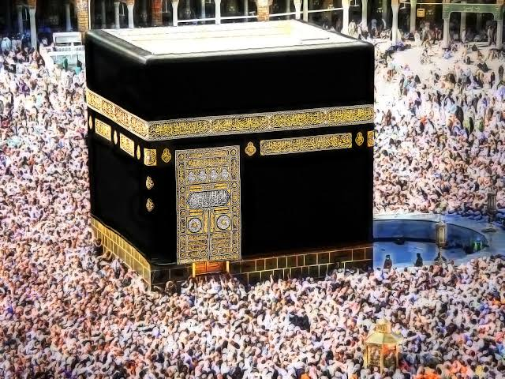
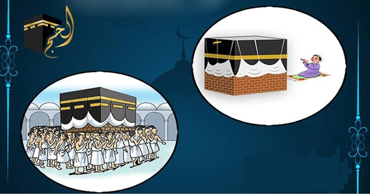
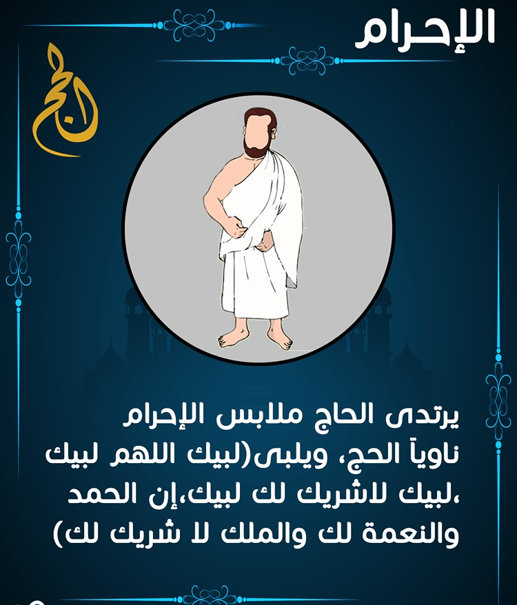
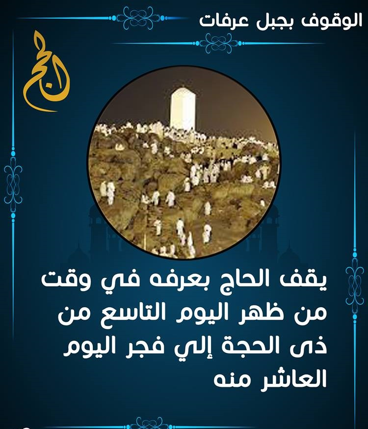
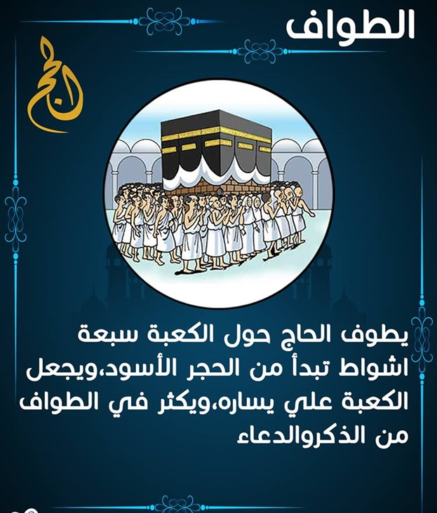
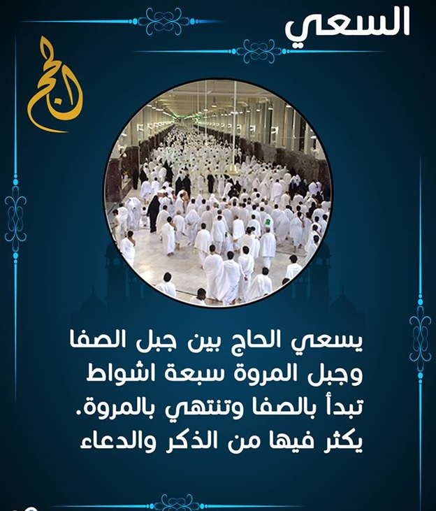
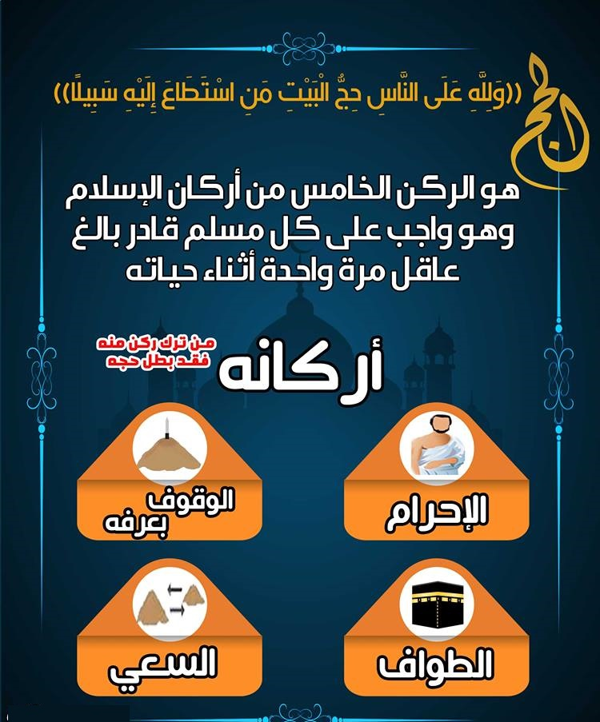

الركن الخامس : حج البيت

الركن الخامس حج البيت من استطاع إليه سبيلا
هو الركن الخامس من اركان الاسلام الخمس، وقد أمر الله المسلمين بحج البيت ولمن استطاع وقد قال تعالى ( وَلِلَّهِ عَلَى النَّاسِ حِجُّ الْبَيْتِ مَنِ اسْتَطَاعَ إِلَيْهِ سَبِيلًا )، ويعرف الحج على أنه زيارة بيت الله الحرام والطواف حول الكعبة المكرمة والسعي بين الصفا والمروة والوقوف بجبل عرفات والقيام بكل مناسك الحج.
شرح مناسك الحج.. تعريف الحج وأركانه
1. شرح مناسك الحج
2.تعريف الحج
3.موعد الحج
4.ما هي شروط الحج
5.أركان الحج بالترتيب
6.أركان الحج بالصور
7.واجبات الحج وسننه
8.ماذا يعلمنا الحج
شرح مناسك الحج

تعريف الحج
الحج : هو خامس ركن من أركان الإسلام الخمسة وهو فرض عين على كل مسلم قادر ماديّا و جسديّا.
ولذلك فهو فريضة تؤدّى مرّة واحدة في العمر.
موعد الحج
قال تعالى :-
(الْحَجُّ أَشْهُرٌ مَعْلُومَاتٌ فَمَنْ فَرَضَ فِيهِنَّ الْحَجَّ فَلا رَفَثَ وَلا فُسُوقَ وَلا جِدَالَ فِي الْحَجِّ
وَمَا تَفْعَلُوا مِنْ خَيْرٍ يَعْلَمْهُ اللَّهُ وَتَزَوَّدُوا فَإِنَّ خَيْرَ الزَّادِ التَّقْوَى وَاتَّقُونِ يَا أُولِي الأَلْبَابِ) سورة البقرة197 .
يبدأ في الثامن من ذي الحجة من كل عام هجري ، وحتى آخر أيام التشريق، أي في آخر يوم من أيام عيد الأضحى المبارك .
حيث يقوم الحاج فيه بتأدية عدد من المناسك التي سنقوم بذكرها .
تنقسم أعمال الحج إلى:-
أركان واجب عملها ، ولا يصح الحج بترك أي منها .
واجبات يصح الحج بترك شيء منها ، ويجبر المتروك بدم .
سنن ومستحبات يكمل بها أجر الحاج وثوابه عند الله .
أعلى
ما هي شروط الحج
يجب أن تتوفر خمسة شروط، وهي أن يكون مسلم ، عاقل ، بالغ ، حرّا ليس عبدًا أو مملوكًا وقادر .
أركان الحج بالترتيب
عدد أركان الحج أربعة عند جمهور أهل العلم وهي:
الإحرام:

الإحرام:
وهو نية الدخول في النسك لقول الرسول- صلى الله عليه وسلَّم- :
( إنما الأعمال بالنيات وإنما لكل امرىء ما نوى ) ، وله زمان محدد وهي ما ورد ذكره
ومكان محدد وهي المواقيت التي يحرم الحاج منها .
أعلى
الوقوف بعرفة:

لقول النبي – صلى الله عليه وسلم- :
( الحج عرفة ، من جاء ليلة جَمْع قبل طلوع الفجر فقد أدرك ) رواه أبوداود .
والمقصود بجَمْع: المزدلفة، ويبدأ وقته من زوال شمس يوم التاسع من ذي الحجة ويمتد إلى طلوع فجر يوم النحر .
فمن حصل له في هذا الوقت وقوف بعرفة ولو لحظة واحدة فقد أدرك الوقوف .
أعلى
الطواف :

لقوله سبحانه :{ثم ليقضوا تفثهم وليوفوا نذورهم وليطوفوا بالبيت العتيق } (الحج: 29)
ويتم الطواف سبعة أشواط حول الكعبة ، تبدأ من الحجر الاسود .
السعي:

لقوله- صلى الله عليه وسلم- : ( اسعوا فإن الله كتب عليكم السعي ) رواه أحمد
وهذا السعي هو سعي الحج ، ووقته بالنسبة للمتمتع بعد الوقوف بعرفة ومزدلفة وطواف الإفاضة ، وأما القارن والمفرد فلهما السعي بعد طواف القدوم .
أركان الحج بالصور

أعلى
واجبات الحج وسننه
وأما واجبات الحج التي يصح بدونها فهي :
• يكون الإحرام من الميقات المعتبر شرعاً لقوله – صلى الله عليه وسلم- :
( هن لهن ولمن أتى عليهن من غير أهلهن لمن كان يريد الحج والعمرة ) رواه البخاري .
• الوقوف بعرفة إلى الغروب لمن وقف نهاراً لأن النبي – صلى الله عليه وسلم- وقف إلى الغروب وقال :
( لتأخذوا عني مناسككم ) .
• المبيت بمزدلفة ليلة النحر واجب عند أكثر أهل العلم لأنه – صلى الله عليه وسلم- بات بها وقال :
( لتأخذ أمتي نسكها فإني لا أدري لعلي لا ألقاهم بعد عامي هذا ) رواه ابن ماجة .
ويجوز الدفع إلى منى في آخر الليل للضعفة من النساء والصبيان ممن يشق عليهم زحام الناس .
وذلك ليرموا الجمرة قبل وصول الناس .
• المبيت بمنى ليالي أيام التشريق لأنه – صلى الله عليه وسلم- بات بها وقال:
( لتأخذوا عني مناسككم ) ؛ ولأنه أذن لعمه العباس أن يبيت بمكة ليالي منى من أجل سقايته .
ورخص أيضاً لرعاة الإبل في ترك المبيت مما دل على وجوب المبيت لغير عذر .
• رمي الجمار: جمرة العقبة يوم العيد ، بالإضافة إلى الجمرات الثلاث أيام التشريق
لأن هذا هو فعل النبي صلى الله عليه وسلم، ولأن الله تعالى قال :
{واذكروا الله في أيام معدودات فمن تعجل في يومين فلا إثم عليه
ومن تأخر فلا إثم عليه لمن اتقى } (البقرة: 203)
ورمي الجمار من ذكر الله ، لقوله عليه الصلاة والسلام :
( إنما جُعل الطواف بالبيت، وبالصفا والمروة ، ورمي الجمار لإقامة ذكر الله )رواه أبوداود .
• الحلق والتقصير ، وذلك لأن النبي صلى الله عليه وسلم أمر به فقال :
( وليقصر وليحلل ) متفق عليه ، ودعا للمحلقين ثلاثا وللمقصرين مرة .
طواف الوداع لأمره – صلى الله عليه وسلم- بذلك في قوله :
( لا ينفرن أحد حتى يكون آخر عهده بالبيت ) رواه مسلم .
وقول ابن عباس : ” أمر الناس أن يكون آخر عهدهم بالبيت إلا أنه خفف عن المرأة الحائض “ .
أعلى
سنن الحج:
وغير هذه الأركان والواجبات من أعمال الحج فسنن .
– كالمبيت بمنى في اليوم الثامن .
– وطواف القدوم .
– والرمل في الثلاثة الأشواط الأولى .
– والاغتسال للإحرام.
– ولبس إزار ورداء أبيضين نظيفين .
– والتلبية من حين الإحرام بالحج إلى أن يرمي جمرة العقبة .
– واستلام الحجر وتقبيله .
وألا يفرط فيها اقتداء بالنبي صلى الله عليه وسلم .
ماذا يعلمنا الحج
• تحقيق التوحيد، ففي القرآن سورة سُمِّيت بـ”سورة الحج”، جلُّها تتحدَّث عن التوحيد، والتحذير من الشِّرك بكافَّة صُوَرِه وأشكاله..
• تجريد النية لله، وإخلاص العمل له وحده: فقد فرضَ الحجَّ على عباده وأرشدهم إلى تجريد النِّية، وإخلاص العمل له وحده.
• الحج المتابعة: وذلك بأنْ يتعبَّد العبد لربِّه بما شرَعه له في كتابه وفي سُنَّة نبيِّه – صلَّى الله عليه وسلَّم – لا بما يهواه أو يَستحسنه
• ترسيخ عقيدة الولاء والبَراء
• الاستجابة لله ولرسوله – صلَّى الله عليه وسلَّم -: يتجلَّى ذلك من خلال استجابة إبراهيم الخليل – عليه السَّلام – لأمر الله له بأن يُنادي في النَّاس بالحجِّ
• تعظيم شعائر الله، واجتناب حرماته.
• تحقيق التقوى
• مراقبة الله: فالعبد حينما يقوم بأداء مناسك الحجِّ يكون في غايةٍ من المُراقبة لله.
• يذكُّرنا باليوم الآخر.
• يعلمنا الحج كيف نذوُّق حلاوة الذِّكر ولَذَّة المناجاةاقرأ لطفلك قصص اطفال مصورة عن الحج وعيد الأضحى
أعلى